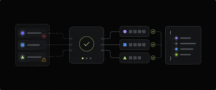

Design System Toolkit
Custom tools built to automate governance, validation, and
design-to-code workflows.

Token Bridge
Exports structured tokens for engineering while preserving system relationships.
View Tool →
M3 Bridge
Restructures legacy Material 3 Figma files into scalable semantic token architectures.
View Tool →

Token Validator
Identifies raw values and enforces token usage to maintain system consistency
View Tool →